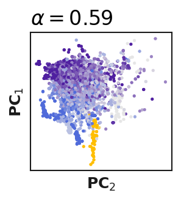
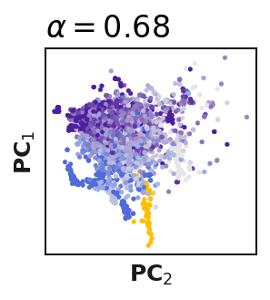
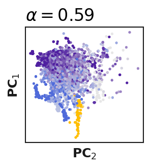
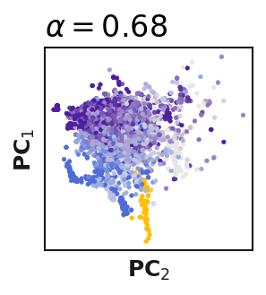

PCovR
Contents
%load_ext autoreload
%autoreload 2
import numpy as np
import sys, os
import signac
from tqdm import tqdm_notebook as tqdm
from matplotlib import pyplot as plt
from matplotlib import colors, cm, patches
from IPython.display import clear_output
# change to where kernel-tutorials is installed
kernel_tutorials_path = '../../../../kernel-tutorials'
sys.path.append(kernel_tutorials_path)
from utilities.general import FPS, sorted_eig, get_stats, eig_inv
from utilities.CUR import CUR, get_Ct
from utilities.plotting import plot_regression, plot_projection, get_cmaps
from utilities.classes import PCovR
from utilities.kpcovr import KPCovR
from utilities.colorbars import cbarHot, cbarBWR, cbarPhi
sys.path.append('../../scripts/')
from pcovr_plotting import plot_regrs, plot_projs
from operations import check_all_mirrors
from cmap2D import colormap2d
hot=cbarHot()
bwr=cbarBWR()
phi=cbarPhi()
cmaps = get_cmaps()
project=signac.get_project()
scp = dict(project.document.scp)
scp['cmap2D'] = colormap2d
scp['s'] = scp['s']/2.
scp['linewidth'] = 0.25
scp.pop('alpha')
props = dict(boxstyle='round', facecolor='w')
cmapX = cbarHot()
precision = 10
The autoreload extension is already loaded. To reload it, use:
%reload_ext autoreload
---------------------------------------------------------------------------
ModuleNotFoundError Traceback (most recent call last)
Cell In [2], line 17
14 sys.path.append(kernel_tutorials_path)
16 from utilities.general import FPS, sorted_eig, get_stats, eig_inv
---> 17 from utilities.CUR import CUR, get_Ct
18 from utilities.plotting import plot_regression, plot_projection, get_cmaps
19 from utilities.classes import PCovR
ModuleNotFoundError: No module named 'utilities.CUR'
job=project.open_job(id='939')
if(not os.path.exists(job.fn('figures/for_gif'))):
os.mkdir(job.fn('figures/for_gif'))
sp = dict(job.sp)
sp.pop('n_PC')
assert job.sp.n_PC == 2 or len(project.find_jobs(sp)==1)
PCovR#
test = np.load(job.fn('testing.npz'))
train = np.load(job.fn('training.npz'))
X_test = test["X"]
Y_test = test["Y"]
X_train = train["X"]
Y_train = train["Y"]
print(test['X'].shape)
if(X_test.shape[-1]>6000):
X_test = test["X"][:2000]
Y_test = test["Y"][:2000]
X_train = train["X"][:2000]
Y_train = train["Y"][:2000]
print(X_test.shape)
(5437, 448)
(5437, 448)
if(job.isfile('figures/for_gif/pcovr_data.npz')):
d = np.load(job.fn('figures/for_gif/pcovr_data.npz'), allow_pickle=True)
proj_data = {float(x): d[x].item() for x in d if 'flip' not in x and x!='checked'}
fx = list(d['flip_x'])
fy = list(d['flip_y'])
else:
print("Starting anew")
proj_data = {}
fx = []; fy = [];
alphas = np.array(list(sorted(set([*[round(x,6) for x in np.linspace(0,1,101)],
# *[round(x,10) for p in range(-4,0) for i in range(10) for x in [i*10**p, 1.0 - i*10**p] ]
]))))
alphas = alphas[alphas<=1.0].tolist()
# if(Y_train.shape[-1] > 4):
# alphas = [a for i,a in enumerate(alphas) if i%5==0 or (a<=0.6 and a>=0.4)]
# print(len(alphas))
fps_idx = job.document.get('fps_idx', train.get('fps_compute'))
for ai, alpha in enumerate(tqdm(alphas)):
if(alpha not in proj_data):
p = PCovR(alpha = alpha,
regularization=job.document.regularization_param,
n_PC = job.sp.n_PC,
space='feature',
)
p.fit(X_train[:, fps_idx], Y_train)
t, y, _ = p.transform(X_test[:, fps_idx])
proj_data[alpha] = {"T_test": t, "Yp_test": y}
/var/folders/wj/7rfv11952g53zf6ztk8k8g980000gn/T/ipykernel_82267/135602469.py:2: TqdmDeprecationWarning: This function will be removed in tqdm==5.0.0
Please use `tqdm.notebook.tqdm` instead of `tqdm.tqdm_notebook`
for ai, alpha in enumerate(tqdm(alphas)):
fx, fy = check_all_mirrors([], [], alphas, proj_data)
x=plot_projs(job, 'pcovr',
proj_data=proj_data,
alphas=alphas, Y_test=Y_test,
flip_x = fx, flip_y = fy,
save=False)
100%|█████████████████████████████████████████████████████████████████████████████████████████████████████████████████████████████████████████████████████████| 101/101 [00:05<00:00, 18.20it/s]
np.savez(job.fn('figures/for_gif/pcovr_data.npz'),
**{str(x): proj_data[x] for x in proj_data},
flip_x=fx,
flip_y=fy)
from ase.io import read
frames = np.array(read('../../../datasets/C-VII-pp-wrapped.xyz',":"))
test_frames = frames[job.document.frame_indices][job.document.test_idx]
keys = ['average_bond_angle',
'average_nbonds'
]
new_props = np.array([[test_frame.info[k] for k in keys] for test_frame in test_frames])
def scale_point(point, my_bounds=[[ 60., 180.],[ 1., 6.]]):
return np.array([(point[i] - my_bounds[i][0])/(my_bounds[i][1] - my_bounds[i][0]) for i in range(2)])
gaussian_width = 0.08
def gaussian_func(c=(0,0), w=gaussian_width):
return lambda p: np.round(np.exp(-np.linalg.norm(p-c)**2.0/(2*(w**2.0))),1)
vmin = [60., 1.0]
vmax = [180., 6.0]
my_bounds = np.transpose([vmin, vmax])
ideals = np.array([[180,2], [120,3], [109.5,4]])
gaussian_colors = np.array([cm.get_cmap(scp['cmapX'])(1.0),
cm.get_cmap(scp['cmapX'])(0.2),
cm.get_cmap(scp['cmapX'])(0.5)] )
relative_ideals = np.array([scale_point(p, my_bounds) for p in ideals])
gaussians = [gaussian_func(c=r, w=gaussian_width) for r in relative_ideals]
def gaussian_color(p, grey_max = 0.9):
def scale_color(p, x):
return np.array([(grey_max - pp) * (1.0 - x) + pp for pp in p])
p_rel = scale_point(p, my_bounds)
gvals = [g(p_rel) for g in gaussians]
if(sum(gvals)>0):
rgb = np.sum([gv*scale_color(gc, gv) for gv, gc in zip(gvals, gaussian_colors)], axis=0) / np.sum(gvals)
a = np.max(gvals)
# rgb_new = [min(grey_max, (grey_max-r)*(1.0-a)) + r for r in rgb]
return np.array([*rgb[:3]])#_new[:3]])
else:
return grey_max*np.ones(3)
cmap = gaussian_color
# add a 2D colorbar beneath the plots
n=100
cbar = np.zeros((n,n,cmap((0.0,0.0)).shape[0]))
for xi,x in enumerate(np.linspace(vmin[0], vmax[0], n)):
for yi, y in enumerate(np.linspace(vmin[1], vmax[1], n)):
cbar[xi, yi] = cmap((x,y))
/var/folders/wj/7rfv11952g53zf6ztk8k8g980000gn/T/ipykernel_82267/1381338891.py:3: VisibleDeprecationWarning: Creating an ndarray from ragged nested sequences (which is a list-or-tuple of lists-or-tuples-or ndarrays with different lengths or shapes) is deprecated. If you meant to do this, you must specify 'dtype=object' when creating the ndarray.
frames = np.array(read('../../../datasets/C-VII-pp-wrapped.xyz',":"))
if(not os.path.exists(job.fn('figures/for_gif/sp_projections'))):
os.mkdir(job.fn('figures/for_gif/sp_projections'))
for alpha in tqdm(alphas):
fn = 'figures/for_gif/sp_projections/pcovr_%0.8f'%alpha + '.png'
if(not job.isfile(fn)):
fig, ax = plt.subplots(figsize=(2,2))
T = proj_data[alpha]['T_test'][:, :2]
if(alpha in fx):
T = np.matmul(T, [[-1, 0], [0, 1]])
if(alpha in fy):
T = np.matmul(T, [[1, 0], [0, -1]])
if(Y_test.shape[-1] == 1):
vmin, vmax = new_props.min(axis=0), new_props.max(axis=0)
else:
vmin = new_props.mean(axis=0) - 2*new_props.std(axis=0)
vmax = new_props.mean(axis=0) + 2*new_props.std(axis=0)
plot_projection(
Y=new_props,
T=T,
fig=fig, ax=ax,
# vmin=vmin, vmax=vmax,
cbar=False,
colormap=gaussian_color,
# cmap2D=gaussian_color,
x_label=r'$\mathbf{PC}_2$',
y_label=r'$\mathbf{PC}_1$',
marker='o',
rasterized=True,
**{k: scp[k] for k in scp if k not in ['cmapX', 'cmap2D']},
)
ax.set_xticks([])
ax.set_yticks([])
ax.set_title(r'$\alpha=$'+str(round(alpha, precision)),
horizontalalignment='left',loc='left',
)
fig.savefig(job.fn(fn))
plt.show()
/var/folders/wj/7rfv11952g53zf6ztk8k8g980000gn/T/ipykernel_82267/4026795067.py:4: TqdmDeprecationWarning: This function will be removed in tqdm==5.0.0
Please use `tqdm.notebook.tqdm` instead of `tqdm.tqdm_notebook`
for alpha in tqdm(alphas):


 





from shutil import copy
if(not os.path.exists(job.fn('figures/for_gif/reversed_projections'))):
os.mkdir(job.fn('figures/for_gif/reversed_projections'))
for alpha in tqdm(alphas):
fn = 'figures/for_gif/reversed_projections/pcovr_%0.8f'%(1-alpha) + '.png'
if(not job.isfile(fn)):
fig, ax = plt.subplots(figsize=(2,2))
T = proj_data[alpha]['T_test'][:, :2]
if(alpha in fx):
T = np.matmul(T, [[-1, 0], [0, 1]])
if(alpha in fy):
T = np.matmul(T, [[1, 0], [0, -1]])
if(Y_test.shape[-1] == 1):
vmin, vmax = Y_test.min(axis=0), Y_test.max(axis=0)
else:
vmin = Y_test.mean(axis=0) - 2*Y_test.std(axis=0)
vmax = Y_test.mean(axis=0) + 2*Y_test.std(axis=0)
plot_projection(
Y=Y_test,
T=T,
fig=fig, ax=ax,
vmin=vmin, vmax=vmax,
cbar=False,
x_label=r'',
y_label=r'',
marker='o',
rasterized=True,
**scp
)
ax.set_xticks([])
ax.set_yticks([])
ax.set_ylim([min(-1.8, ax.get_ylim()[0]),max(1.0, ax.get_ylim()[1])])
print(alpha, ax.get_ylim())
ax.annotate(xy=(0.025, 0.025), text=r'$\alpha=$'+str(round(alpha, precision)),
xycoords='axes fraction',
horizontalalignment='left',va='bottom',
)
fig.savefig(job.fn(fn))
plt.show()
# break
if(alpha in [0.0,1.0]):
for l in 'ABCDEFGHIJ':
copy(job.fn(fn), job.fn(fn.replace('0.png', l+'.png')))
/var/folders/wj/7rfv11952g53zf6ztk8k8g980000gn/T/ipykernel_82267/1179261327.py:6: TqdmDeprecationWarning: This function will be removed in tqdm==5.0.0
Please use `tqdm.notebook.tqdm` instead of `tqdm.tqdm_notebook`
for alpha in tqdm(alphas):
0.0 (-1.8, 1.0)
0.01 (-1.8, 1.0)
0.02 (-1.8, 1.0)
0.03 (-1.8, 1.0)
0.04 (-1.8, 1.0)
0.05 (-1.8, 1.0)
0.06 (-1.8, 1.0)
0.07 (-1.8, 1.0)
0.08 (-1.8, 1.0)
0.09 (-1.8, 1.0)
0.1 (-1.8, 1.0)
0.11 (-1.8, 1.0)
0.12 (-1.8, 1.0)
0.13 (-1.8, 1.0)

0.14 (-1.8, 1.0)
0.15 (-1.8, 1.0)
0.16 (-1.8, 1.0)
0.17 (-1.8, 1.0)
0.18 (-1.8, 1.0)
0.19 (-1.8, 1.0)
0.2 (-1.8, 1.0)
0.21 (-1.8, 1.0)
0.22 (-1.8, 1.0)
0.23 (-1.8, 1.0)
0.24 (-1.8, 1.0)
0.25 (-1.8, 1.0)
0.26 (-1.8, 1.0)
0.27 (-1.8, 1.0)
0.28 (-1.8, 1.0)
0.29 (-1.8, 1.0)
0.3 (-1.8, 1.0)
0.31 (-1.8, 1.0)
0.32 (-1.8, 1.0)
0.33 (-1.8, 1.0)
0.34 (-1.8, 1.0)
0.35 (-1.8, 1.0)
0.36 (-1.8, 1.0)
0.37 (-1.8, 1.0001661174055176)
0.38 (-1.8, 1.013658100428699)
0.39 (-1.8, 1.0269781182401916)
0.4 (-1.8, 1.0401329217000144)
0.41 (-1.8, 1.0531288290471044)
0.42 (-1.8, 1.0659717555576846)
0.43 (-1.8, 1.0786672378723752)
0.44 (-1.8, 1.0912204529915228)
0.45 (-1.8, 1.1036362317632353)
0.46 (-1.8, 1.1159190664145213)
0.47 (-1.8, 1.128073111357903)
0.48 (-1.8, 1.1401021761080337)
0.49 (-1.8, 1.152009708641799)
0.5 (-1.8164640982021707, 1.1637987667315208)
0.51 (-1.8335646543828474, 1.1754719738657424)
0.52 (-1.8503769548026083, 1.1870314549176182)
0.53 (-1.8668902366850646, 1.1984787447301617)
0.54 (-1.883090399964687, 1.2098146598859632)
0.55 (-1.8989592507707622, 1.221039119749913)
0.56 (-1.9147791777351792, 1.2385699851669838)
0.57 (-1.9303292869366588, 1.2583892505190994)
0.58 (-1.9455072770286144, 1.2791390751832012)
0.59 (-1.9602725095223197, 1.3009759461877346)
0.6 (-1.974572173109335, 1.3240883622327155)
0.61 (-1.9883371631059992, 1.3487053488775038)
0.62 (-2.0014762131651245, 1.375107697387824)
0.63 (-2.0138673935662634, 1.4036429245168358)
0.64 (-2.0253455636678104, 1.4347453339061522)
0.65 (-2.0356834798195016, 1.4689630634846476)
0.66 (-2.0445627402763162, 1.5069946005034522)
0.67 (-2.0515280981951514, 1.5497377626235083)
0.68 (-2.0559139987075263, 1.5983539659806278)
0.69 (-2.056723956637326, 1.6543478754063008)
0.7 (-2.052429277010282, 1.7196520258025392)
0.71 (-2.0406317635390376, 1.7966736789020483)
0.72 (-2.0175120159217155, 1.8881721480356937)
0.73 (-1.977010547670229, 1.9966173191053693)
0.74 (-1.9099710011816962, 2.1222689172101106)
0.75 (-1.8045660001632529, 2.258988009721217)
0.76 (-1.8, 2.38892172751952)
0.77 (-1.8, 2.4842887756902194)
0.78 (-1.8, 2.527034549574935)
0.79 (-1.8, 2.5223977245403324)
0.8 (-1.8, 2.477741758314071)
0.81 (-1.8, 2.408036172272173)
0.82 (-1.8, 2.3224194882139995)
0.83 (-1.8, 2.2244192737859843)
0.84 (-1.8, 2.113706193223295)
0.85 (-1.8, 2.105921649663618)
0.86 (-1.8, 2.1039436482597265)
0.87 (-1.8, 2.0892196907717056)
0.88 (-1.8, 2.057662336817348)

0.89 (-1.8, 2.014508239042437)

0.9 (-1.8, 1.9651872635054257)
0.91 (-1.8, 1.9135677154058548)
0.92 (-1.8, 1.8652938509860912)
0.93 (-1.8, 1.8227819879528135)
0.94 (-1.8, 1.7866499598398313)
0.95 (-1.8, 1.7565132661289289)
0.96 (-1.8, 1.768140482240098)
0.97 (-1.8, 1.7888995649437656)
0.98 (-1.815794236274937, 1.8070582997132834)
0.99 (-1.8393022106841665, 1.8233139354831005)

1.0 (-1.8604723645672123, 1.8381489860977978)
# folder = job.fn('figures/for_gif/regressions/')
# if(not os.path.exists(folder)):
# os.mkdir(folder)
# for alpha in tqdm(alphas):
# fn = folder+'pcovr_regr_%0.8f'%alpha + '.png'
# if(not job.isfile(fn)):
# n_prop = len(job.document.property_name)
# fig, ax = plt.subplots(n_prop, 1,
# figsize=(2,2*n_prop))
# if(n_prop==1):
# ax = np.reshape([ax], (1,))
# for pi, prop in enumerate(job.document.property_name):
# plot_regression(Y=Y_test[:,pi],
# Yp=proj_data[alpha]["Yp_test"][:,pi],
# cbar=False, **scp,
# fig=fig, ax=ax[pi])
# ax[pi].set_yticks([])
# ax[pi].set_xticks([])
# ax[pi].set_ylabel(r'$\mathbf{XP}_{XY}$')
# ax[pi].set_xlabel('')
# xlim = ax[pi].get_xlim()
# s = '{}\n[{}]'.format(prop , job.document.property_units[pi])
# ax[pi].text(x=0.975*(xlim[1]-xlim[0])+xlim[0],
# y=0.05*(xlim[1]-xlim[0])+xlim[0],
# s=s,
# horizontalalignment='right',
# )
# ax[-1].set_xlabel(r'$\mathbf{Y}$')
# ax[0].set_title(r'$\alpha=$'+str(round(alpha, precision)),
# horizontalalignment='left',loc='left',
# )
# fig.savefig(fn)
# plt.show()
# if(alpha in [0.0,1.0]):
# for l in 'ABCDEFGHIJ':
# copy(fn, fn.replace('0.png', l+'.png'))
folder = job.fn('figures/for_gif/dual/')
if(not os.path.exists(folder)):
os.mkdir(folder)
for alpha in tqdm(alphas):
fn = folder+'pcovr_%0.8f'%alpha + '.png'
if(not job.isfile(fn)):
n_prop = len(job.document.property_name)
if(n_prop<4):
fig, ax = plt.subplots(n_prop+1, 1, figsize=(2, 2.4*n_prop+2))
else:
# only works for qm9
from matplotlib import gridspec
fig = plt.figure(figsize=(8,8))
gs = gridspec.GridSpec(4,4)
ax = [fig.add_subplot(gs[:2, :2]),
*[fig.add_subplot(gs[i, j]) for i in range(4) for j in range(4) if i >1 or j>1]]
T = proj_data[alpha]['T_test'][:, :2]
if(alpha in fx):
T = np.matmul(T, [[-1, 0], [0, 1]])
if(alpha in fy):
T = np.matmul(T, [[1, 0], [0, -1]])
if(Y_test.shape[-1] == 1):
vmin, vmax = Y_test.min(axis=0), Y_test.max(axis=0)
else:
vmin = Y_test.mean(axis=0) - 2*Y_test.std(axis=0)
vmax = Y_test.mean(axis=0) + 2*Y_test.std(axis=0)
plot_projection(
Y=Y_test,
T=T,
fig=fig, ax=ax[0],
vmin=vmin, vmax=vmax,
cbar=False,
x_label=r'$\mathbf{PC}_2$',
y_label=r'$\mathbf{PC}_1$',
marker='o',
rasterized=True,
**scp
)
ax[0].set_xticks([])
ax[0].set_yticks([])
ax[0].set_title(r'$\alpha=$'+str(round(alpha, precision)),
horizontalalignment='left',loc='left',
)
for pi, prop in enumerate(job.document.property_name):
plot_regression(Y=Y_test[:,pi],
Yp=proj_data[alpha]["Yp_test"][:,pi],
cbar=False, x_label='', y_label='',
**scp, fig=fig, ax=ax[pi+1])
ax[pi+1].set_yticks([])
ax[pi+1].set_xticks([])
ax[pi+1].set_xlabel('')
xlim = ax[pi+1].get_xlim()
s = '{}\n[{}]'.format(prop , job.document.property_units[pi])
ax[pi+1].text(x=0.975*(xlim[1]-xlim[0])+xlim[0],
y=0.05*(xlim[1]-xlim[0])+xlim[0],
s=s,
horizontalalignment='right',
)
if(n_prop < 4):
ax[pi+1].set_ylabel(r'$\mathbf{XP}_{XY}$')
ax[pi+1].set_xlabel(r'$\mathbf{Y}$')
if(n_prop < 4):
fig.subplots_adjust(hspace=0.3, wspace=0.2)
else:
ax[0].xaxis.set_label_position('top')
fig.subplots_adjust(hspace=0.0, wspace=0.0)
fig.savefig(fn)
plt.show()
break
if(alpha in [0.0,1.0]):
for l in 'ABCDEFGHIJ':
copy(fn, fn.replace('0.png', l+'.png'))
/var/folders/wj/7rfv11952g53zf6ztk8k8g980000gn/T/ipykernel_82267/3026622825.py:6: TqdmDeprecationWarning: This function will be removed in tqdm==5.0.0
Please use `tqdm.notebook.tqdm` instead of `tqdm.tqdm_notebook`
for alpha in tqdm(alphas):
! convert -delay 10 -loop 0 ../../workspace/{job._id}/figures/for_gif/dual/*png ../../workspace/{job._id}/figures/for_gif/dual.gif
KPCovR#
test = np.load(job.fn('testing.npz'))
train = np.load(job.fn('training.npz'))
print(test['X'].shape)
X_test = test["X"]
Y_test = test["Y"]
X_train = train["X"]
Y_train = train["Y"]
print(test['X'].shape)
try:
assert "K" in test
K_test = test["K"]
K_train = train["K"]
except:
print("This job is not equipped for this.")
Y_hat = np.load(job.fn('model_caches/krr_data.npz'))['Yp_train']#[:2000, :]
if(job.isfile('figures/for_gif/kpcovr_data.npz')):
d = np.load(job.fn('figures/for_gif/kpcovr_data.npz'), allow_pickle=True)
kproj_data = {float(x): d[x].item() for x in d if 'flip' not in x and x!='checked'}
fx = list(d['flip_x'])
fy = list(d['flip_y'])
else:
kproj_data = {}
fx = []; fy = [];
for ai, alpha in enumerate(tqdm(alphas)):
if(alpha not in kproj_data):
p = KPCovR(alpha = alpha,
regularization=job.document.regularization_param,
n_PC = job.sp.n_PC,
kernel_type=lambda x1, x2: None
)
p.fit(X=X_train, Y=Y_train, K=K_train, Yhat=Y_hat)
t, y, _ = p.transform(X=X_test, K=K_test)
kproj_data[alpha] = {"T_test": t, "Yp_test": y}
fx, fy = check_all_mirrors([], [], alphas, kproj_data)
x=plot_projs(job, 'kpcovr',
proj_data=kproj_data,
alphas=alphas, Y_test=Y_test,
flip_x = fx, flip_y = fy,
save=False)
np.savez(job.fn('figures/for_gif/kpcovr_data.npz'),
**{str(x): kproj_data[x] for x in kproj_data},
flip_x=fx,
flip_y=fy)
# from shutil import copy
# if(not os.path.exists(job.fn('figures/for_gif/kprojections'))):
# os.mkdir(job.fn('figures/for_gif/kprojections'))
# for alpha in tqdm(alphas):
# fn = 'figures/for_gif/kprojections/kpcovr_%0.8f'%alpha + '.png'
# if(not job.isfile(fn)):
# fig, ax = plt.subplots(figsize=(2,2))
# T = kproj_data[alpha]['T_test'][:, :2]
# if(alpha in fx):
# T = np.matmul(T, [[-1, 0], [0, 1]])
# if(alpha in fy):
# T = np.matmul(T, [[1, 0], [0, -1]])
# if(Y_test.shape[-1] == 1):
# vmin, vmax = Y_test.min(axis=0), Y_test.max(axis=0)
# else:
# vmin = Y_test.mean(axis=0) - 2*Y_test.std(axis=0)
# vmax = Y_test.mean(axis=0) + 2*Y_test.std(axis=0)
# plot_projection(
# Y=Y_test,
# T=T,
# fig=fig, ax=ax,
# vmin=vmin, vmax=vmax,
# cbar=False,
# x_label=r'$\mathbf{PC}_2$',
# y_label=r'$\mathbf{PC}_1$',
# marker='o',
# rasterized=True,
# **scp
# )
# ax.set_xticks([])
# ax.set_yticks([])
# ax.set_title(r'$\alpha=$'+str(round(alpha, precision)),
# horizontalalignment='left',loc='left',
# )
# fig.savefig(job.fn(fn))
# plt.show()
# # break
# if(alpha in [0.0,1.0]):
# for l in 'ABCDEFGHIJ':
# copy(job.fn(fn), job.fn(fn.replace('0.png', l+'.png')))
# folder = job.fn('figures/for_gif/kregressions/')
# if(not os.path.exists(folder)):
# os.mkdir(folder)
# for alpha in tqdm(alphas):
# fn = folder+'pcovr_kregr_%0.8f'%alpha + '.png'
# if(not job.isfile(fn)):
# n_prop = len(job.document.property_name)
# fig, ax = plt.subplots(n_prop, 1,
# figsize=(2,2*n_prop))
# if(n_prop==1):
# ax = np.reshape([ax], (1,))
# for pi, prop in enumerate(job.document.property_name):
# plot_regression(Y=Y_test[:,pi],
# Yp=kproj_data[alpha]["Yp_test"][:,pi],
# cbar=False, **scp,
# fig=fig, ax=ax[pi])
# ax[pi].set_yticks([])
# ax[pi].set_xticks([])
# ax[pi].set_ylabel(r'$\mathbf{KP}_{KY}$')
# ax[pi].set_xlabel('')
# xlim = ax[pi].get_xlim()
# s = '{}\n[{}]'.format(prop , job.document.property_units[pi])
# ax[pi].text(x=0.975*(xlim[1]-xlim[0])+xlim[0],
# y=0.05*(xlim[1]-xlim[0])+xlim[0],
# s=s,
# horizontalalignment='right',
# )
# ax[-1].set_xlabel(r'$\mathbf{Y}$')
# ax[0].set_title(r'$\alpha=$'+str(round(alpha, precision)),
# horizontalalignment='left',loc='left',
# )
# fig.savefig(fn)
# plt.show()
# if(alpha in [0.0,1.0]):
# for l in 'ABCDEFGHIJ':
# copy(fn, fn.replace('0.png', l+'.png'))
from shutil import copy
folder = job.fn('figures/for_gif/kdual/')
if(not os.path.exists(folder)):
os.mkdir(folder)
for alpha in tqdm(alphas):
fn = folder+'kpcovr_%0.8f'%alpha + '.png'
if(not job.isfile(fn)):
n_prop = len(job.document.property_name)
if(n_prop<4):
fig, ax = plt.subplots(n_prop+1, 1, figsize=(2, 2.4*n_prop+2))
else:
# only works for qm9
from matplotlib import gridspec
fig = plt.figure(figsize=(4,4))
gs = gridspec.GridSpec(4,4)
ax = [fig.add_subplot(gs[:2, :2]),
*[fig.add_subplot(gs[i, j]) for i in range(4) for j in range(4) if i >1 or j>1]]
T = kproj_data[alpha]['T_test'][:, :2]
if(alpha in fx):
T = np.matmul(T, [[-1, 0], [0, 1]])
if(alpha in fy):
T = np.matmul(T, [[1, 0], [0, -1]])
if(Y_test.shape[-1] == 1):
vmin, vmax = Y_test.min(axis=0), Y_test.max(axis=0)
else:
vmin = Y_test.mean(axis=0) - 2*Y_test.std(axis=0)
vmax = Y_test.mean(axis=0) + 2*Y_test.std(axis=0)
plot_projection(
Y=Y_test,
T=T,
fig=fig, ax=ax[0],
vmin=vmin, vmax=vmax,
cbar=False,
x_label=r'$\mathbf{PC}_2$',
y_label=r'$\mathbf{PC}_1$',
marker='o',
rasterized=True,
**scp
)
ax[0].set_xticks([])
ax[0].set_yticks([])
ax[0].set_title(r'$\alpha=$'+str(round(alpha, precision)),
horizontalalignment='left',loc='left',
)
for pi, prop in enumerate(job.document.property_name):
plot_regression(Y=Y_test[:,pi],
Yp=kproj_data[alpha]["Yp_test"][:,pi],
cbar=False,x_label = '', y_label = '',
**scp, fig=fig, ax=ax[pi+1])
ax[pi+1].set_yticks([])
ax[pi+1].set_xticks([])
xlim = ax[pi+1].get_xlim()
s = '{}\n[{}]'.format(prop , job.document.property_units[pi])
ax[pi+1].text(x=0.975*(xlim[1]-xlim[0])+xlim[0],
y=0.05*(xlim[1]-xlim[0])+xlim[0],
s=s, fontsize=10 if n_prop < 4 else 6,
horizontalalignment='right',
)
if(n_prop < 4):
ax[pi+1].set_ylabel(r'$\mathbf{KP}_{KY}$')
ax[pi+1].set_xlabel(r'$\mathbf{Y}$')
fig.subplots_adjust(hspace=0.3, wspace=0.2)
else:
ax[0].xaxis.set_label_position('top')
fig.subplots_adjust(hspace=0.0, wspace=0.0)
fig.savefig(fn)
plt.show()
# break
if(alpha in [0.0,1.0]):
for l in 'ABCDEFGHIJ':
copy(fn, fn.replace('0.png', l+'.png'))
! convert -delay 10 -loop 0 ../../workspace/{job._id}/figures/for_gif/kdual/*png ../../workspace/{job._id}/figures/for_gif/kdual.gif
plt.rcParams